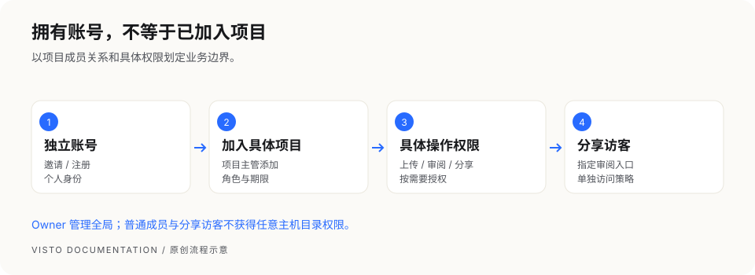
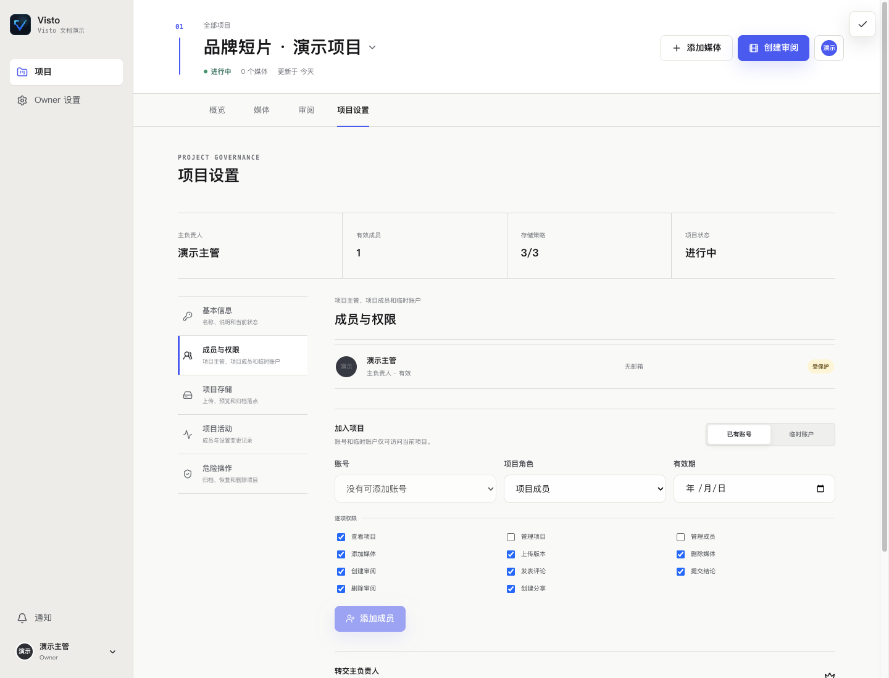

文档中心/项目与素材
VISTO USER GUIDE / 13
成员、邀请与权限
用户手册2026-10-03Server 浏览器工作台
Visto 有工作空间账号与项目成员两层关系。团队邀请让一个人拥有自己的账号；项目成员关系决定他能在哪个项目里工作。


常见身份
| 身份 | 作用 | 权限原则 |
|---|---|---|
| Owner | 管理全局基础设施和账号 | 有广泛权限，只交给可信维护者 |
| 项目主管 | 管理被分配项目的成员和协作 | 不等于获得其他项目或主机权限 |
| 项目成员 | 参与被加入项目的素材与审阅 | 具体上传、移除、分享和结论权限看成员设置 |
| 临时账户 | 有限项目访问或临时协作 | 检查权限和到期时间；默认权限可较少 |
| 分享访客 | 从指定分享入口查看内容 | 由分享范围、密码、有效期、评论及下载开关约束 |
项目成员默认可有较多协作权限，包括上传、审阅、分享或从项目移除媒体；若某人只需观看，应明确收紧权限，不凭角色名称推断“只读”。


看图操作： 在项目设置里管理成员；工作空间账号与本项目的角色分别确认。
邀请并加入项目
- Owner 在 Owner 设置 → 账号与注册 创建成员邀请，填写成员邮箱并选择合适的账户类型。
- 将本次邀请入口交给对应成员；邀请链接和账号不要多人共用。
- 成员打开邀请页，按页面完成自己的资料和密码设置。
- Owner 或具备权限的项目主管进入 项目设置 → 成员与权限，将该账号加入项目。
- 选择项目角色及具体权限；有时间边界时设有效期。
- 用成员自己的账号确认能看见项目、能做被允许的操作。
开放注册
Owner 可以配置注册策略。允许注册并不自动给新用户任何项目权限；项目主管或 Owner 仍需把用户加入具体项目。
调整或收回访问
成员离开项目时，检查项目成员关系、临时账户期限、已创建的分享和后续通知。移除成员不能收回已被对方下载的文件；外部分享也需要单独检查和撤销。